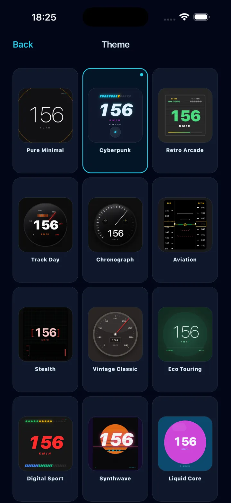
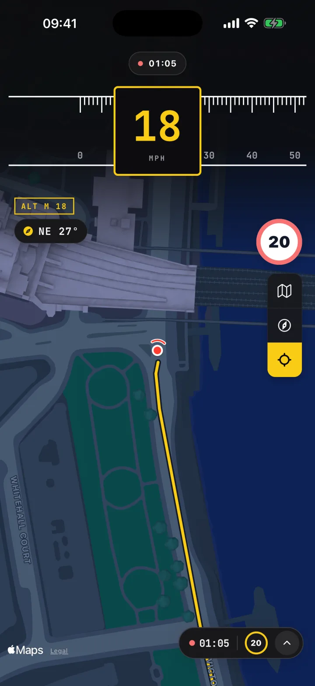
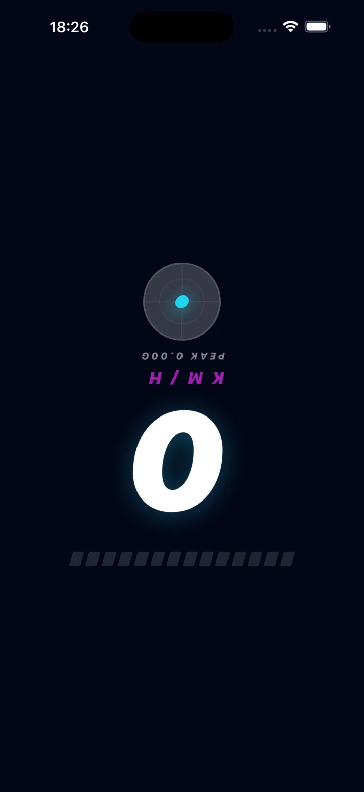

Three things, in order
Allow location
Asked once. The speed comes from GPS, so without it there is nothing to put on the dial. While you're just watching the speed it only needs location while the app is open — recording a trip is what asks to keep reading in the background, and only for as long as the trip runs.
Drive, or walk, or cycle
The dial reads live, with altitude, heading and G-force beside it if you want them. No connection required — GPS works with the phone offline. Accuracy follows the sky: open road is best, tunnels and city canyons are worst.
Record the drive, if you want it
Start a trip and it keeps the route, the distance, the duration and your average and top speed. Afterwards you get it back on a map. It's stored on the phone, and it stays there.
What it actually looks like

Fifteen facesThe same speed, drawn fifteen ways. Each one brings its own app icon with it.

Live mapYour speed on a tape over the road ahead, with the posted limit and the route drawn as you go.

Mirror modeDrawn upside down and back to front on purpose — it reads correctly in the windscreen.
What it is, and what it isn't
It is
- A GPS speed readout, in km/h, mph or knots
- Fifteen dial faces, from a bare hairline arc to a tachometer with a redline, each with a matching app icon
- A trip recorder — route, distance, duration, average and top speed, reviewed afterwards on a map
- Live altitude, heading and G-force alongside the speed
- A mirror mode that throws a high-contrast readout onto the windscreen at night
- A speed limit you set yourself, with a haptic or a sound when you pass it
- Working offline, and in eleven languages
- Free, with an optional Pro upgrade
It isn't
- A certified instrument. GPS speed is an estimate — your car's own dial is the legal reference, and this is not evidence of anything
- A navigation app. There is no routing and no turn-by-turn
- A speed camera or police detector
- Reliable without a view of the sky — indoors, underground and between tall buildings, GPS degrades and so does the reading
- Something to operate while you're driving. Set it before you move
Your drives stay on the phone
Trips and routes are recorded and kept on the device. There is no account to make, and the app does not upload where you have been.
Read the privacy policyStays on your iPhone
Every trip, route, speed and time. No account, no upload.
Leaves only if you turn it on
The optional speed-limit lookup sends an approximate position to find the posted limit for the road you're on. Leave it off and nothing about your location leaves the phone.